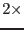
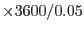

The projection direction (ie, the direction of the point at which the projection plane is tangent to the celestial sphere) is user-selectable from the following alternatives, chosen via the parameter tangdirstyle:
As said in the introduction, the `pixel size' of the X and Y values is fixed at 0.05 arcsec; the remaining thing to be specified is the maximum allowed X and Y values. This is specified in a somewhat roundabout way via the parameter imagesize, which specifies the total half-width and/or half-height of the projection plane in decimal degrees. After offsetting by imagesize, X and Y can therefore run from 1 to  imagesize .